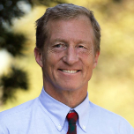

Our ultimate long term goal is a complete replacement of fossil fuels and atomic power with renewable energies and energy savings while promoting the sustainability, resilience and development of local communities around the world. For this purpose, we have collaborated with local civil society organisations, research and education centres, companies, professionals and governmental authorities from all over the globe for decades.
We carry out research and development projects in collaboration with Danish and international universities, research centres, SMEs, local authorities and other civil society organisations. New energy solutions, improved products, tools for local authorities or energy policy recommendations are some of the outcomes of these projects. Practical expertise and years of tight collaboration with different actors that are making the energy transition happen are our added value as partners of any research project. Furthermore, in all our projects our objective is to make sure that the newly developed knowledge or solutions do not land in a drawer, but reach the right actors or markets.
We carry out research and development projects in collaboration with Danish and international universities, research centres, SMEs, local authorities and other civil society organisations. New energy solutions, improved products, tools for local authorities or energy policy recommendations are some of the outcomes of these projects. Practical expertise and years of tight collaboration with different actors that are making the energy transition happen are our added value as partners of any research project. Furthermore, in all our projects our objective is to make sure that the newly developed knowledge or solutions do not land in a drawer, but reach the right actors or markets.
At Folkecenter we do testing and demonstration of different renewable energies technologies, with different organizations, universities or companies coming here to test their products.
Folkecenter takes part in research and development activities, with the main focus of renewable energy and sustainable development.
Our trainee programme has formed generations of renewable energy experts all over the world. Hundreds of engineers, scientists and students have visited Folkecenter for different periods, all with one goal: give their contribution for the development of a modern and sustainable society.
“Doing all we can to combat climate change comes with numerous benefits, from reducing pollution and associated health care costs to strengthening and diversifying the economy by shifting to renewable energy, among other measures.”

“Renewable energy is a clear winner when it comes to boosting the economy and creating jobs.”

“Wind and other clean, renewable energy will help end our reliance on fossil fuels and combat the severe threat that climate change poses to humans and wildlife alike”
Kammersgaardsvej 16, Sdr. Ydby
DK-7760 Hurup Thy
CVR: 7229 1212
Tel +45 9795 6600